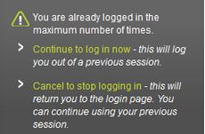

Login Help
Welcome to the login help page for http://kerboodle.oxfordsecondary.co.uk. This page contains the answers to many of the most common issues encountered by our customers when they are trying to login to their online product.
If you are unable to find the answers you are looking for, please Contact us.
Technical Frequently asked questions
Students
Q: Why is my login is not working?
A: Check that you have entered the correct username, password and institution code. If you are unsure of any of these details then please ask your teacher. Unfortunately we (Oxford) would be unable to give your login details to you, or your parents. Only your school can do this.
Q: I have forgotten my institution code - what should I do?
A:
Check with your teacher or friends to find out the institution code for your school. The code should be short, and contain a combination of letters and numbers.
Q: I have forgotten my username - what should I do?
A:
Check with your teacher to find out your username. The standard format for a username is the first letter of your first name and your full surname.
For example
name - Paul Smith
username - psmith
Teachers and Administrator
Q: I haven’t received my login details - where can I find them?
A: If this is the first time you have accessed a course on http://kerboodle.oxfordsecondary.co.uk, then you should receive an email asking you to activate your account. If you haven’t received an activation email then please check your Spam/Junk email folder. Please make sure that the email address edtechsupport@oup.com has been added to your whitelist/safe senders list. If you are unsure of how to do this then please contact your IT department.
You can also request for the information to be sent again using the Forgot my details link on the login page.
If you have previously used an Oxford online product, then see Why haven’t I been sent any details for the new course we’ve purchased? below for assistance.
Q: Why haven’t I been sent any details for the new course we’ve purchased?
A: If this is the first time you have accessed a course on http://kerboodle.oxfordsecondary.co.uk or www.oxbox.co.uk then you should receive an email to allow you to activate your account. See I haven’t received my login details - where can I find them? above, for assistance.
If you are already signed up to http://kerboodle.oxfordsecondary.co.uk or www.oxbox.co.uk you will be able to use the same login details as you currently have.
You should have received an email confirming the purchase of your new course - check your Spam/Junk email folder. But don’t worry - there is no critical information contained in this email.
If you can login but cannot see the course, then please check with your Administrator that they have added you to the new course.
Q: I am using the correct username and password but I still can’t login.
A: Please check your cookie settings as the online product requires cookies to be enabled to use the site. If you are unsure how to set the cookie setting on your school network then please consult your IT Department.
If you are using a personal computer then the guides below can help you to enable cookies.
Internet Explorer - Help
Mozilla Firefox - Help
Safari - Help
Ipad - To set your Ipad to allow cookies please click on Setting > Safari > Privacy > Accept cookies
If you would like more information about how we use cookies then please visit our Cookies Policy Page
Q: What does it mean when I see this message: “You are already logged in the maximum number of times”?
A: If you see the message below when logging in to your online product then this means that your previous session is still active. By clicking on Continue to log in now it will log you out of your previous session and allow you to access the site.
If you are aware of your previous session and don’t want to proceed then click Cancel to stop logging in.
Although unlikely, it is possible you have seen this message because someone else is using your login. Continue to login, but you may like to change your password, just in case. To do this, click on your name at the top of the screen, and scroll to the bottom. Follow the instructions to change your password, then click Save Changes.
Q: I have forgotten my login details - what should I do?
A: If you have forgotten your username or password you can request access to these details by using the Forgot my details link in the top right hand corner of the Login page. Click the Forgot my details link and a window will appear asking for the email address that you used to set up your online product account. Once you click Reset Password then an email will be sent to your account. Please check your Inbox and Spam/Junk mail folders for the Reset password instructions email. Clicking on the link in this email will take you to http://kerboodle.oxfordsecondary.co.uk, and allow you to reset your password. It will also show you your username, which you are able to change should you wish to.
If you have forgotten your institution code, then speak to a colleague or your Administrator.
Q: My student has forgotten their password - what can I do?
A: You can reset their password - this will return it to the default, which is the same as their username. Find the student in the User Management module using the Search bar, or the Groups filters on the left. Select the student from the list, and click on Preview from above the list. This will open the Preview pane. In it there is an option Reset Password. Click on the tickbox, then click Save Changes at the bottom. The student’s password is now reset.
Q: I have logged in but I’m unable to see my course - where is it?
A: If your licence for this product is still active, then please contact your product Administrator and ask them to assign you onto the relevant courses.
If, however, your licence to this product has expired, then you will no longer have access to it even though you can still login. Visit our website if you wish to re-purchase this product, or another course.
Q: What does it mean when I see this message: “You have to confirm your account before continuing”?
A: If you see this message when logging in, it means that you have not yet activated your account. To activate your account, you will need to click on the activation link in the email that was sent to your registered email address. Please note that this is a different email from the one including your invoice number.
If you have not received this email, first check your Junk/Spam folders. If you still cannot locate the email, please Contact Us.
Q: Who is my Administrator?
A: If your institution does not already have an Administrator for http://kerboodle.oxfordsecondary.co.uk or www.oxbox.co.uk, you will be prompted to invite one when you visit the User Management module. Visit the Administrator support page to find out more about this role.
If you do not receive this prompt, or you can see that there are already some students in the User Management module, then your institution already has an Administrator. To find out who they are, click on your name at the very top of the screen. Scroll to the bottom of the My Profile window that opens, and the Administrator’s details will be shown at the bottom.
Q: Do you have a poster to remind students of the Institution code?
A: Yes. Please download the Institution Code Poster and print it for your classrooms. Simply write your institution code into the box available. Every user in your school will have the same institution code.
Q: How do I create logins for students?
A: Only the Administrator can add students - this ensures that students only receive one set of login details if site is used by multiple departments.
If your institution already has an Administrator, you can discover who they are by clicking on your name at the very top of the screen. Their details will be shown at the bottom of the My Profile window that opens.
If there is not already an Administrator in place you will be asked to invite one each time you enter the User Management module. Entering their details generates emails asking them to activate their account, and explaining all about the system and how to add students. If you want to find out more information about managing student accounts, please visit the Teacher User Management support page.
Q: The Administrator has left without sharing their login - what should we do?
A: If you are sure that the Administrator is no longer at your institution, and you do not have the login details, then Contact Us and we will be able to help
Q: We need to change who our Administrator is - how do I do this?
A: An Administrator can change any of their details via the My Profile window which is found by clicking on your name at the very top of your screen. In this window you can change your name, email and password (as well as other information) by editing each field and clicking Save Changes. This way you can transfer the role from one staff member to another.
Q: Should I always log out of the online product?
A: Yes - you should always log out of your online product when you have finished using it.

© 2013 Oxford University Press. All rights reserved | Privacy Policy | Legal Notice